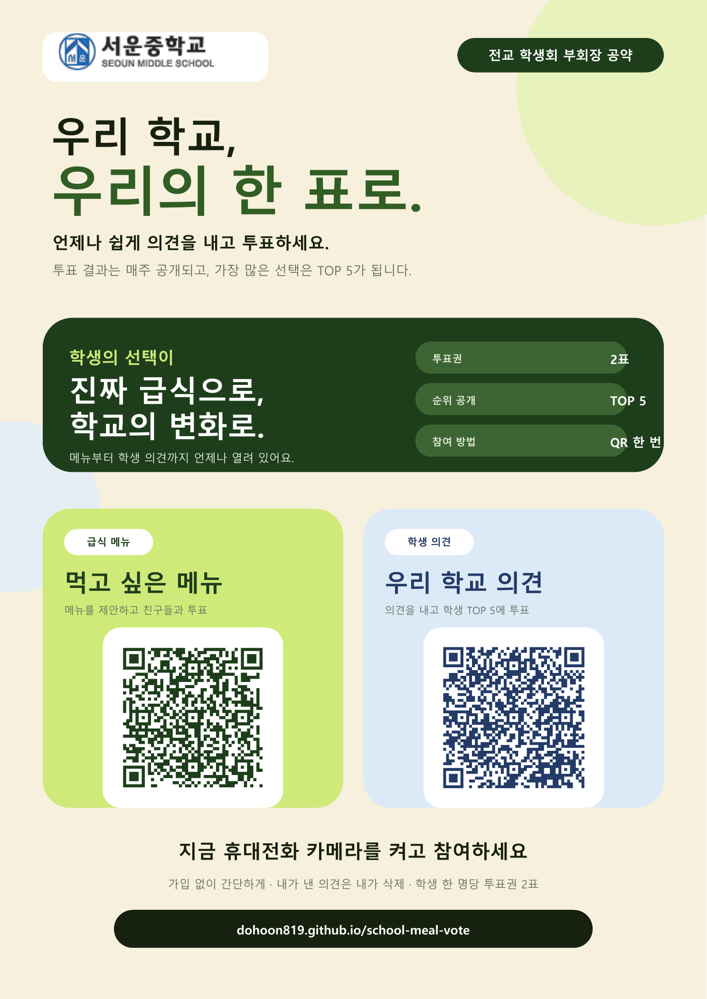

언제나 의견·투표 가능 · 투표 결과는 매주 집계
우리 학교,
우리 학교,
우리의 한 표로.
언제나 쉽게 의견을 내고 투표할 수 있어요. 먹고 싶은 메뉴와 학생 의견을 자유롭게 제안해 주세요.
급식 투표 현재 1위
🍝 메뉴 제안!
✓ 학생 한 표
어떤 메뉴가 1위가 될까요?
첫 메뉴를 기다리는 중♥ 0
0개의 메뉴와 의견
0번의 소중한 한 표
2/2내 남은 투표권
급식 메뉴
TOP 5
아래 급식 메뉴 투표에서 받은 표가 이 순위에 바로 반영돼요. 가장 많은 표를 받은 메뉴를 한눈에 확인할 수 있어요.
🍱아직 올라온 메뉴가 없어요첫 메뉴를 제안하면 여기에서 1위가 됩니다.
LIVE VOTE
먹고 싶은 급식에 투표해요
메뉴 이름만 보고 먹고 싶어요 또는 별로예요를 눌러주세요.
친구들의 메뉴를 모으고 있어요…
아직 올라온 메뉴가 없어요
먹고 싶은 메뉴 이름을 첫 번째로 올려보세요.
HOW IT WORKS
아주 쉽게 참여해요.
- 01의견 내기메뉴 이름 또는 학교에 바라는 점만 간단히 적어요.
- 02한 표 누르기친구들이 올린 메뉴와 의견에 투표해요.
- 03TOP 5 확인표가 모이면 순위가 자동으로 바뀌어요.
SHARE & VOTE
친구들과 바로 참여해요
휴대전화 카메라로 원하는 QR을 찍으면 해당 투표 화면으로 바로 이동합니다.



여러분의 한 표로
계속되는 학생 참여 웹사이트
급식 메뉴와 학생 의견, 두 가지 참여 방법을 한눈에 확인하세요.
이미지 저장하기